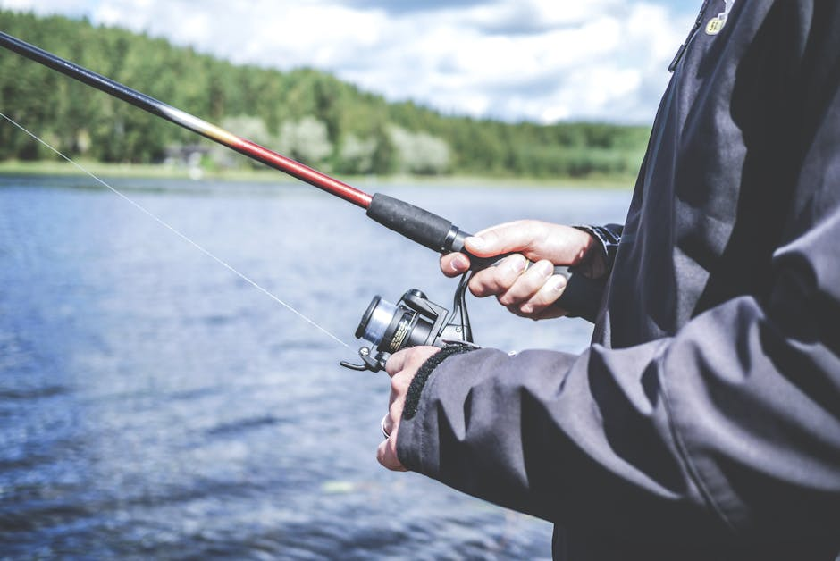

Most bass bites happen at half the speed you think they do. If you're ripping a jerkbait fast or burning a spinnerbait back to the boat, you're probably fishing over the top of fish that would eat if you'd just slow down. The bite you're looking for isn't the violent smash most anglers wait for — it's a subtle, almost lazy intercept that happens when the lure gets into the fish's comfort zone and looks like an easy meal rather than a fleeing prey item.
The slow-motion bite is especially prevalent in three situations: post-spawn bass sitting on beds and guarding fry, fish holding in heavy cover where they don't need to chase, and bass feeding on crawfish in the fall when the crustaceans are molting and moving slowly. In all three cases, the bass is in an energy-conservation mindset. It doesn't want to sprint — it wants to slide. When you pitch that finesse worm to a bed and let it settle, then barely twitch it, you're speaking the bass's actual language rather than your own optimistic translation.
Timing the hookset is where most anglers blow it. The instinct is to react immediately, but a slow-motion bite often involves the bass simply closing its mouth while barely moving. Set the hook on the weight of the fish, not the splash. That means waiting one full beat after you feel contact before you sweep the rod. Bass are notorious for "tasted and rejected" — they lip a soft plastic, decide it's not quite right, and eject it before you've even reacted. If you wait that extra half-second, you often find the fish has already committed and is actually holding the lure when you drive the hook home.
On the water, try this drill: every time you get a bite on a fast retrieve and miss it, immediately switch to the slowest retrieve you can stand — deadstick, shake, then wait. Not every fish, but a surprising number, will come back and eat the same lure offered slowly. Carry two rods if you have to, one fast and one slow, and swap immediately when the first approach produces follows but no hookups. The bass that follows and doesn't eat isn't rejecting you — it's telling you to change the speed, not the color or the lure.
📷 Photo by Ivan Kwan on Pexels
← Back to Tight Lines